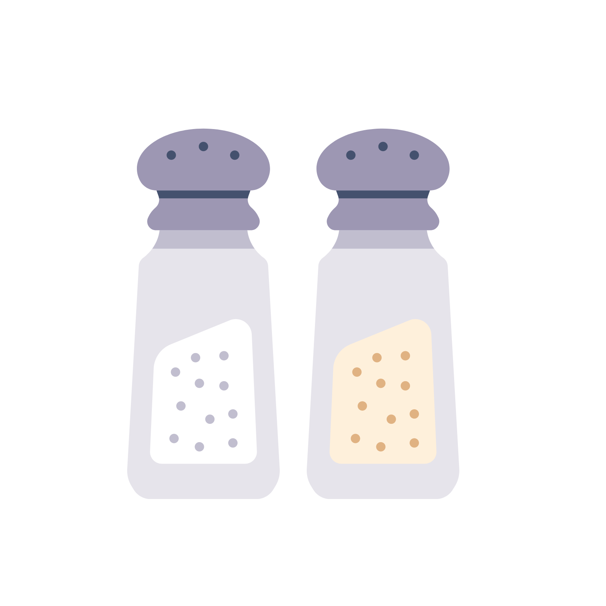

- This week's recipe is an Instagram find which turned out to be pretty decent
- Add grape tomatoes, olive oil, salt and pepper to a baking dish.
- Then add a block of feta cheese in the middle of the container.
- Bake it at 400 Fahrenheit for 30 minutes.
- When it comes out, add some garlic and fresh basil, giving it all a good mix.
- Then add some of that cooked pasta on top of it and mix everything together.
- Serve Hot
Recipe:
- Pasta
- Feta Cheese
- Grape Tomatoes
- Olive Oil
- Salt and Pepper 
- Garlic
- Basil